注意：以下的内容均为个人观点。
如果你看完后有不同的观点也没关系！请指出，我很乐意去学尝试积极的东西。
封面：

1. module 是什么？
还是参照博主：BSP工程师的内核必修课：2.1 内核模块机制 第二章的讲解内容，同时补充自己对一些额外问题的理解，以及一些混乱问题的实践。
1.1 module 和 ELF
首先，关于什么是 module，从本质上讲，Linux 的 .ko 文件是一个标准的 ELF（Executable and Linkable Format）可重定位目标文件。所以只要是标准的二进制程序文件，它内部就会被严格划分为多个 Section。
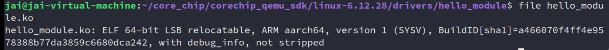
简单理解为和之前平时写 user 的代码没两样，只是说在后面的模块编译、加载、使用等内容有更独特的地方。
这里也可以简单看看这篇文章：未初始化的全局变量占不占固件空间？了解这个问题的同时也学习下 ELF。
1.2 module 的本质
关于 module，个人认为这就是一个 OS 上的概念：Loadable kernel module，Wikipedia相关定义如下：
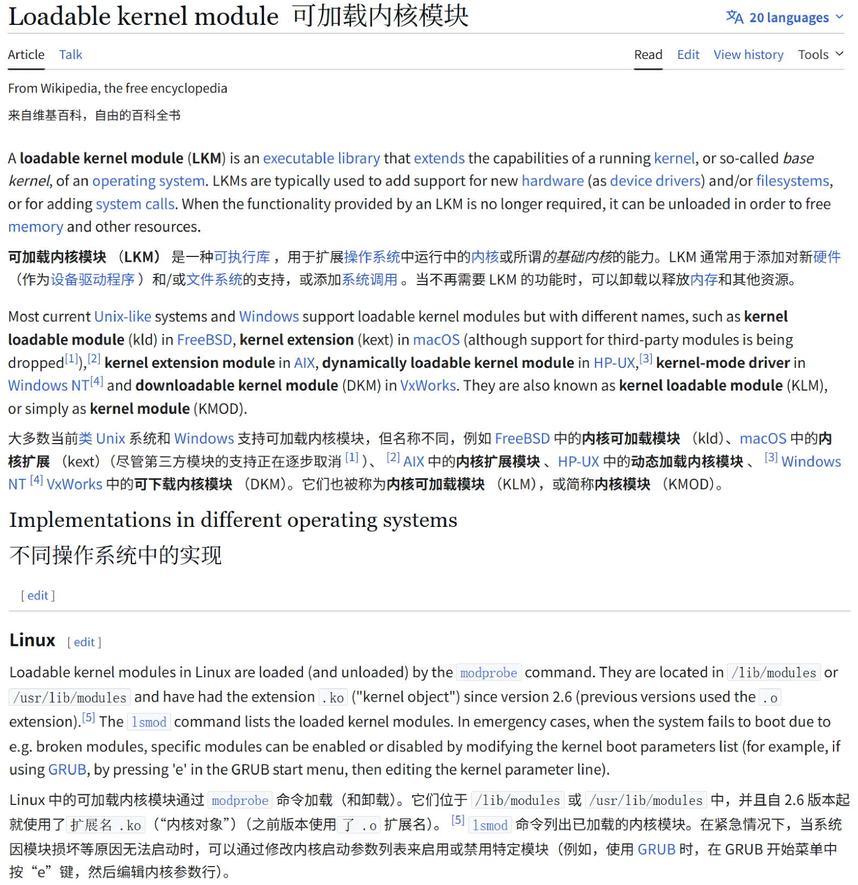
则可以进一步总结为三点的内容：
-
宏内核下的微内核补丁
这个问题博主在：BSP工程师的内核必修课：2.1 内核模块机制 已经讲过。
模块的本质，就是让宏内核拥有了类似微内核（Microkernel）的“热插拔”和“动态扩展”能力。
本人在 QNX 下也做过一些开发，在这种微内核上写相关的驱动代码的体验，实际上就是在写应用程序。比如说 QNX 经典的
resmgr，资源/驱动都是通过这个机制来写的，各个resmgr之间通过IPC通信。 -
动态链接，只不过是在特权级
我们在用户空间会使用到动态库（
.so）来加载一些会被公用的程序，内核模块.ko本质上就是内核态的共享库。比如说，当我输入
insmod、modprobe的时候，实质是用户态的程序调用了finit_module系统调用，这做的事情和用户态的动态链接器ld.so都差不多：-
load
.ko进内存 -
符号解析
比如调用一个
printk，但是printk是外部定义的，那么内核就会去遍历自己维护的导出符号表（Exported Symbol Table），找到内核镜像中printk的物理内存地址，然后把这个地址填进自己的模块代码中。如果要看内核导出了什么符号，可以这么看：
cat /proc/kallsyms | less 0000000000000000 A fixed_percpu_data 0000000000000000 A __per_cpu_start 0000000000000000 A cpu_debug_store 0000000000000000 A irq_stack_backing_store 0000000000000000 A entry_stack_storage ... 0000000000000000 A logical_maps 0000000000000000 A cpu_die_map 0000000000000000 A cpu_core_map 0000000000000000 A cpu_sibling_map 0000000000000000 A cpu_info ... -
执行模块特定的
module_init注册函数。
-
-
面向对象的接口注册
这个理解也很好懂，模块本身就不能用运行，本质就是一个事件驱动的插件，所以我写任何的模块代码，本质上都是在对 kernel 的几个 subsystem（USB、VFS、网络等等）注册自己的回调函数，通知内核说：如果发生了 X 事件（比如某个 USB 设备插进来了），请调用我的 Y 函数。”
2. out-of-tree/external module 编译
这部分的内容单纯操作熟悉后其实很简单，但什么
in-tree / out-of-tree、源码内编译，比较混乱，因为随着模块的变动、开发时间的推移，他们的描述就会变，所以个人就很讨厌这些描述（自己一直认为：不要看去看定义，看这个东西具体做了做什么），但不讲明白又会影响和他人的沟通。
看到这个的第一想法，要编译一个东西，那就要把它使用到的功能/依赖全都囊括进来，编译模块也是一样的。
所以，所以自然就需要指定内核源码的位置，这是第一步。
其次要考虑的就是 module 相关的代码，就比如说是博主写的 drivers/hello_module：
// hello_module.c
#include <linux/init.h> // 包含初始化宏
#include <linux/module.h> // 最重要的头文件，描述模块信息
#include <linux/kernel.h> // 提供内核常用宏和函数
// 模块加载函数（初始化函数）
static int __init hello_init(void)
{
printk(KERN_INFO "Hello, Core&Chip Kernel Module!\n");
return 0; // 返回0表示加载成功
}
// 模块卸载函数（清理函数）
static void __exit hello_exit(void)
{
printk(KERN_INFO "Goodbye, Core&Chip Kernel Module!\n");
}
// 指定加载和卸载函数
module_init(hello_init);
module_exit(hello_exit);
MODULE_LICENSE("GPL"); // 指定模块的许可证
MODULE_AUTHOR("shashixiong"); // 指定模块作者
MODULE_DESCRIPTION("A simple Hello World kernel module"); // 描述
可以总结为放在两种地方：
-
代码直接放在内核源码的内部+为这个模块编写对应
Kconfig这种方式就像博主所写的这一篇所使用的源码内编译：
这种方式也是最终模块功能稳定/产品交付时，需要使用的方式，结合源码编译。
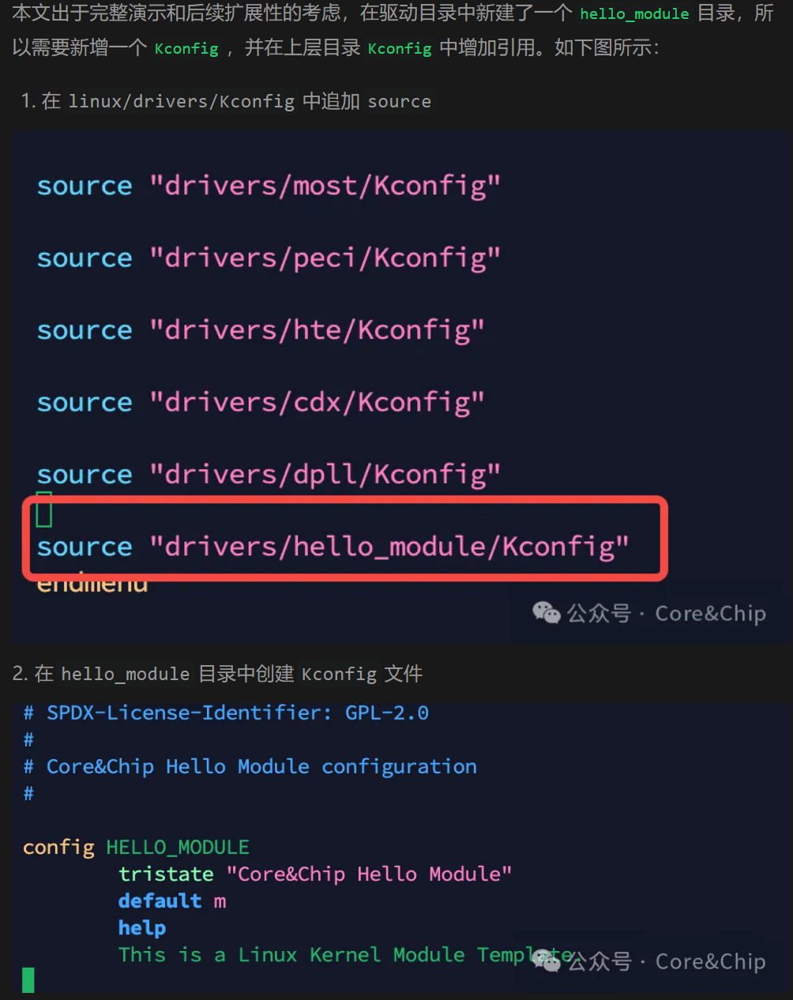
总结的几种编译方式，实际上对这个话题有影响的，稍后说。
# 1. 全部编译 make -j$(nproc) # 类似 make all # 2. 指定模块编译 # -C：指定内核源码目录 # M：指定内核模块目录 make -C <path_to_kernel_dir> M=$PWD # 要使用modprobe/modinfo，需执行 make INSTALL_MOD_PATH=/your/target/rootfs modules_install -
代码随便放在一个位置/或者自己维护的仓库下
比如说笔者也随便写了一个这样的，放在
.../tmp-test/out-of-tree下：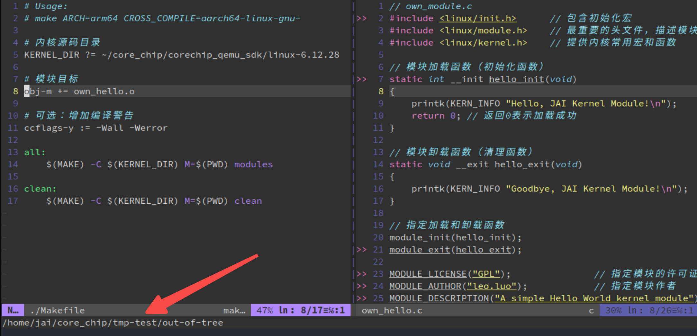
这种编译，直接执行一条
make即可。
所以无论放在哪里，只要内核源码和自己实现的模块代码能够一起编译就行。
接着再回到文章中所说的 out-of-tree，实际上在官方文档中，这个 out-of-tree 会被叫为 external module，但是这两个词就是等价的，文档中也都混用这些描述（out-of-tree 更加口语化吧）[1]：
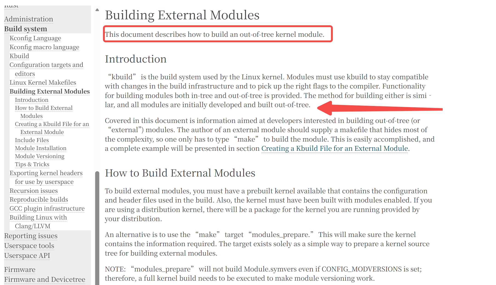
如果还想进一步看内核是怎么处理模块的身份的，怎么知道究竟是什么 external module 还是 in-tree，最最应该做的不是看什么文章分析，而是自己看内核代码的实现，这才是最根本的依据。具体要看的是 scripts/mod/ 这里的内容，这部分包含用于处理和生成内核模块（.ko 文件）元数据的宿主机工具（Host tools）的代码。
而在这里要看模块身份的处理，核心就是 scripts/mod/modpost.c，最终的裁决者：
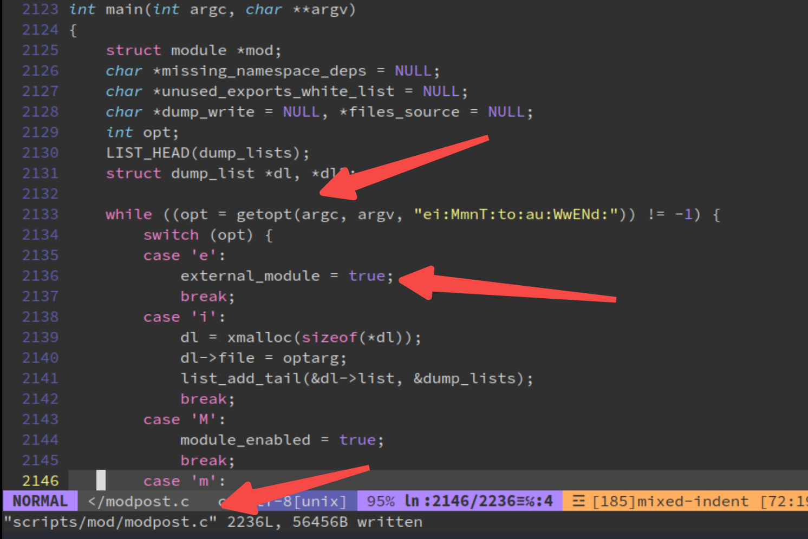
是很常用的 getopt 解析命令行参数，也就是说，只要解析到传递给命令 -e ，自然就认为是 external module 了，也就会对特定的模块打上 in-tree 标签了：
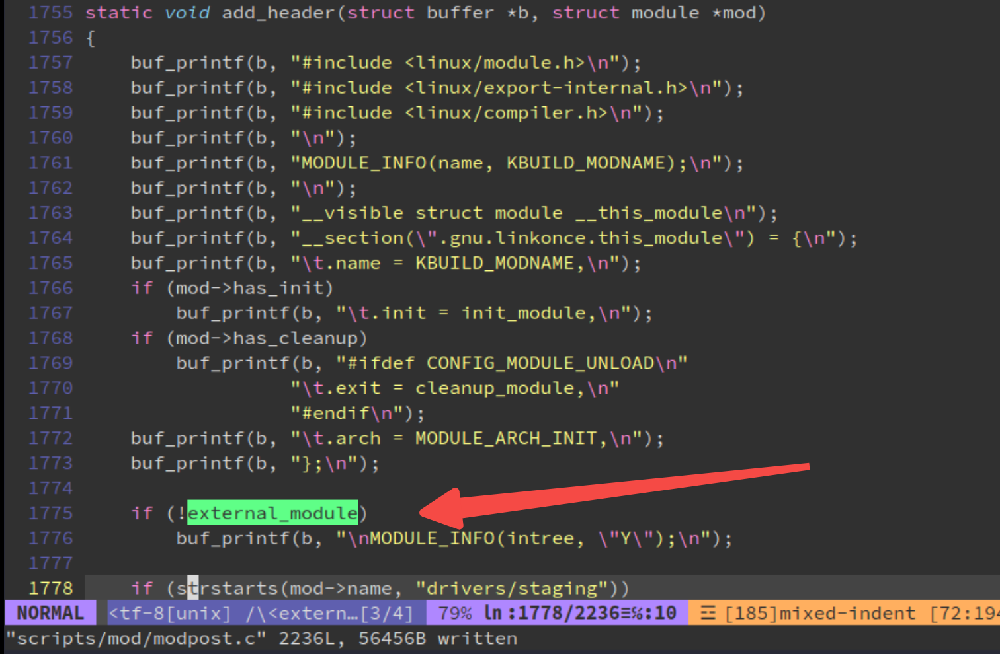
那至于说这个 -e 怎么传进入来的？博主也已经分析得很好了，这里也就是整个问题的关键：下放直接引用博主的内容：
内核的顶层 Makefile 在检查到编译时的 M 非空时，会设置 KBUILD_EXTMOD 变量。
# Use make M=dir or set the environment variable KBUILD_EXTMOD to specify the
# directory of external module to build. Setting M= takes precedence.
ifeq ("$(origin M)", "command line")
KBUILD_EXTMOD := $(M)
endif
内核模块的编译规则在Makefile.modpost中，规则中会判断KBUILD_EXTMOD变量是否为空，如果是空的话代表是in-tree objects。
当不为空则代表是out-of-tree,会将我们传进来的M作为内核模块路径编译obj，并为modpost-args添加-e选项表示external。
ifeq ($(KBUILD_EXTMOD),)
# Generate the list of in-tree objects in vmlinux
# ---------------------------------------------------------------------------
...........
else
# set src + obj - they may be used in the modules's Makefile
obj := $(KBUILD_EXTMOD)
src := $(if $(VPATH),$(VPATH)/)$(obj)
............
modpost-args += -e $(addprefix -i , $(KBUILD_EXTRA_SYMBOLS))
endif# ($(KBUILD_EXTMOD),)
Makefile.modpost会调用并将参数传给modpost.c，当有-e选项时，会将external_module置为true，最终导致内核的编译体系不会在modulename.mod.c中添加MODULE_INFO(intree, "Y")。
也就是说不会给我们自己的驱动打上属于树内的标记。
当然如果想真的看到对比，看 modulename.mod.c，这里就放自己实践的图了：
modulename.mod.c是Kbuild自动生成的中间C源文件，它的主要作用是为模块的最终编译和连接提供元数据（metadata），确保模块能被内核正确识别和加载。
我们来对比看一下会发现正如我们分析的一样，源码内编译的内核模块的元数据中包含了MODULE_INFO(intree，Y)，而源码外编译的没有。
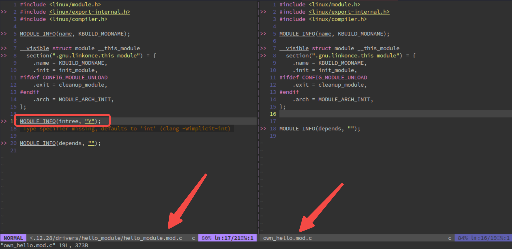
此时再简单分类讨论一下：
-
模块代码已被
Kbuild+Kconfig管理（模块的Makefile能被上一级索引到） -
选中编译该模块时，也就是
obj-y,，此时内核会把这个模块编译进vmlinux了，不管什么in-tree、out-of-tree，一般都被叫成Built-in了。 - 选中该模块，但是
obj-m，此时内核会把这个模块编译成.ko，不合进vmlinux，自己使用insmod/modprobe按需加载。scripts/mod/modpost.c会给它打上in-tree标签。
Gemini 的总结：
既然都内建进
vmlinux骨血里了，自然也就不存在被加载、被查验“身份证（.modinfo）”的过程。
obj-m就是拿到了官方颁发的intree=Y“良民证”的独立个体。
-
模块代码位置在内核源码/自己随机放一个地方/自己维护的仓库
此时基本也只能使用这种方法来编译：
# 2. 指定模块编译 # -C：指定内核源码目录 # M：指定内核模块目录 make -C <path_to_kernel_dir> M=$PWD那自然就会被识别为
out-of-module，external module了。
所以，看是不是所谓 out-of-tree / external module，核心如下：
在编译时，是否有 M= 参数，才是界定内核构建系统把它当成 in-tree 还是 out-of-tre / external module 的唯一标准。
也就是说：不论代码在哪，用了 M= 就是 out-of-tree。
当然了，你要是
所以根本就没有必要纠结什么 in-tree、out-tree。正如这篇回答 [2] 所描述的那样：
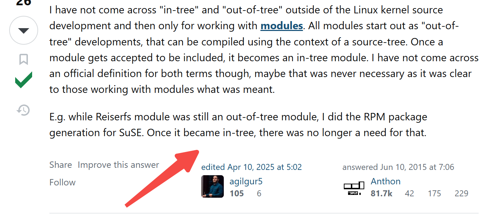
任何模块的开发都是从 out-of-tree 开始，一旦开发完成、测试通过，合入内核后，就变成所谓的 in-tree了。
而且，在不同的场景中讨论 in-tree、out-of-tree 本来就是有着不同的含义。所以没有必要记住这些内容，明白自己是在做什么要做什么即可！
这里再附上几次实验的结果：
-
obj-m编译版本，就不看了，博主也有 -
手动指定单个编译（
new...）：make drivers/hello_module/hello_module.ko：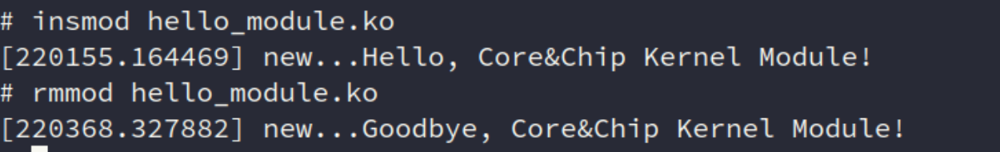
-
手动使用
-M参数编译：make -C ~/core_chip/corechip_qemu_sdk/linux-6.12.28 M=~/core_chip/corechip_qemu_sdk/linux-6.12.28/drivers/hello_module/（一般情况下应该没有人会选择这种吧？）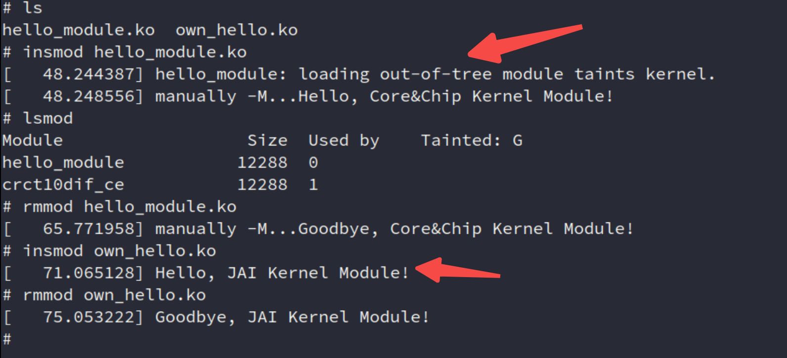
顺便一说，污染警告是“一次性”的 (One-Time Warning)。
if (!get_modinfo(info, "intree")) { /* 划重点：如果当前还没有 OOT 污染标记，才会打印警告 */ if (!test_bit(TAINT_OOT_MODULE, &tainted)) pr_warn("%s: loading out-of-tree module taints kernel.\n", mod->name); /* 打上污染标记 */ add_taint_module(mod, TAINT_OOT_MODULE, LOCKDEP_STILL_OK); }内核觉得：“既然系统已经不干净了，开发者肯定知道了，没必要每次加载外部模块都疯狂刷屏报警告。”
同时，
rmmod洗不清“污染记录”的，内核的 Taint 标记是全局且不可逆的（除非重启系统）。一旦某个模块触发了污染，这个污点就会一直留在/proc/sys/kernel/tainted这个全局变量里，直到系统下一次重启（Reboot）。哪怕肇事模块已经被卸载得干干净净，系统依然处于“已污染”状态。
另外，更加重要的是的实践是：
加载外来内核模块会被内核标记为内核污染，但是大多数情况下只是一个标记警告，并不会对我们的内核模块产生什么功能影响，所以开发中是可以忽略的。
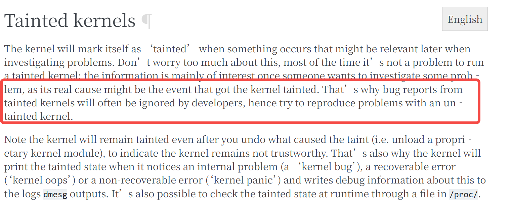
在测试功能的时候，随便你怎么折腾都行，但是在功能稳定之后，将内核模块进行源码内编译，就不会再有这个警告了。
3. 厂商 SDK 相关实践（AI 回答）
这部分才是一开始在想的问题，由于我又不在行业内还没入职，所以只能问问 LLM。
按照自己之前在某车载的Tier-1的 BSP 的实习经历，也就是拿到原厂的 SDK 后，提取出来，自行维护成自己的 SDK 仓库。
而在进行用户层/微内核的 feature 验证和开发的时候，是直接写好了某个功能后，push 后触发 CICD，编译小包（某个仓库镜像）直接上板测试。
如果对于模块，没怎么做，只能猜：完成 feature 代码开发后，先单独编译模块，然后放到机器上进行第一次测试；然后功能通了后，进行整包编译后再上板测试；然后通过后再提交到
Gitlab/Gerrit让同事进行code review。
以下为思考和 prompt：
那如果我直接在源码树里加代码，就像上面那样的
drivers/hello_module，这毕竟是我自己开发维护的，并没有为内核社区所接受，所以本质还是一个自定义的内容，比如是自维护的
SDK或者闭源的驱动。那我就想问，原厂最终提供的
SDK以及这些模块/相关代码究竟是以何种方式来做的？因为有些部分代码又不会提交到内核社区的，但是又是自己Kbuild+Kconfig维护的。换句话说，各个厂家是如何处理内核社区代码和私有代码之间的关系的？（比如芯片原厂、终端厂商/主机厂）
3.1 代码维护+工程迭代
该回答由 Gemini 生成。由于我也没有做过 Android，所以下方回答是否准确并不保证！只适用于学习。
流派一：芯片原厂 / 方案商（如 高通、瑞芯微、NXP、联发科）
核心做法：建立“私有内核树（Vendor Fork）”，直接把代码塞进 drivers/。
-
操作方式： 这些原厂（也就是你提到的提供 SDK 的厂商）会从 kernel.org 拉取一个长期支持版（LTS，比如 5.10 或 6.1）。然后，他们会在自己公司内部建一个 Git 仓库，直接在
drivers/soc/、drivers/media/等目录下大肆修改，添加自己的Kconfig和Makefile。 -
属性界定： 对于 Linus Torvalds 维护的“官方主线”来说，这些代码是不存在的；但对于买了这套 SDK 的客户来说，这套代码就是In-tree（树内）的。当你用他们提供的
Makefile编译时（你举的第一个例子），它被打上了官方的标签，不会触发 Out-of-tree 污染（Tainted: O）。in-tree概念还是不要乱用好了。 -
为什么不提交给社区？
- 代码质量差/耦合度高： 原厂为了赶产品进度，代码往往写得非常 Hack，根本过不了内核维护者的代码审查（Code Review）。
- 商业机密与节奏： 芯片还没发布，不可能提前把驱动开源到主线去。
-
总结：占山为王，我的 SDK 里我就是主线。
流派二：闭源硬件巨头（最典型：NVIDIA 显卡驱动、部分闭源 Wi-Fi）
核心做法：发布 Out-of-tree 模块 + 二进制 Blob（黑盒代码）。
- 操作方式： NVIDIA 绝不妥协开源自己的核心图形算法。如果他们把代码放进
drivers/并静态编译，根据 GPL 协议，他们必须开源。因此，他们只能采用纯正的 Out-of-tree (make M=$PWD) 方式。 - 架构设计（Shim 层）： NVIDIA 会提供一个开源的“胶水层（Shim）”代码。在你安装驱动时，安装程序会调用你本机现有的内核头文件，现场
make M=...编译这个胶水层，将其编译成.ko，并在运行时动态链接 NVIDIA 提供的闭源二进制库（.oblob）。由于内核版本千差万别，他们还会使用 DKMS (Dynamic Kernel Module Support) 技术，确保你每次升级内核后，驱动都会自动重新make M=编译一次。 - 如何处理 Taint 污染？
- 他们根本不处理，直接摆烂。
- 当你加载 NVIDIA 驱动时，内核不仅会报
Tainted: O(Out-of-tree)，还会报Tainted: P(Proprietary module has been loaded，加载了专有/非 GPL 模块)。 - 后果： 如果你的系统因为这个驱动崩溃（Kernel Panic），Linux 内核社区的开发者看到日志里有
Tainted: P，会直接拒绝帮你修 Bug：“你加载了闭源黑盒，我们没法排查，找 NVIDIA 去吧。”但对于普通用户来说，只要显卡能用，谁在乎内核告警呢？
流派三：移动生态霸主（Google Android）
核心做法：GKI (Generic Kernel Image) 强制分离，全面走向 Out-of-tree。
- 历史背景： 以前安卓手机厂商（小米、OV等）都采用“流派一”，导致每一款手机都有一个高度定制的内核树，碎片化极其严重，Google 根本没法统一推送内核安全更新。
- 现状（Android 11 之后）： Google 推出了 GKI 架构。Google 编译一个纯净的、不可修改的核心内核镜像（
boot.img），直接发给手机厂商。手机厂商和芯片厂商（高通等）开发的驱动，不允许再塞进drivers/里一起编译！ - 操作方式： 所有的厂商驱动，必须作为 Vendor Modules（Out-of-tree 模块） 独立编译，存放在
/vendor/lib/modules下，在启动时动态加载。 - 如何处理 Taint 和 签名？ 既然是 Out-of-tree，按理说加载不了。但由于整个 Android 构建系统是由 Google 或 OEM 控制的，他们在编译这些 Vendor Modules 时，会使用统一的密钥为这些
.ko打上数字签名。内核加载时校验签名通过即可，不再纠结于它是否在树内。
总结与对比
| 行业场景 | 构建方式 | 是否修改内核源码树 | 是否触发 Taint | GPL 开源义务 |
|---|---|---|---|---|
| 芯片 SDK (BSP) | In-tree (内部 Fork) | 是 (直接改 drivers/) |
否 (系统认为是亲儿子) | 理论上需开源代码 |
| 闭源硬件 (NVIDIA) | Out-of-tree (DKMS) | 否 (保持内核纯净) | 是 (Tainted: P/O) | 成功规避 GPL 限制 |
| 现代 Android (GKI) | Out-of-tree | 否 (核心镜像锁定) | 否 (通过厂商签名白名单机制) | 取决于具体实现 |
3.2 关于 out-of-tree 对产品安全的影响
博主在他的文章中（BSP工程师的内核必修课：2.2. 源码内编译、运行内核模块保姆级教程）中讲到：
“但是最终模块功能稳定或需要交付的时候，还是尽量使用本节介绍的源码内编译的方式，这是正规的方式。
使用out-of-tree的方式，如果你的团队或客户的工程中，开启了
avb(Android Verified Boot)或模块签名这些安全机制，会导致out-of-tree的方式无法正常加载使用。无论你的公司还是业务大小，我们还是要尽量保证自己的流程像个正规军，Work as a professional~!“
我觉得可以让 Gemini 补充一些相关的背景知识。
3.2.1 Linux 内核模块签名机制 (Kernel Module Signing)
为了防止黑客或恶意软件在系统运行时偷偷加载带有后门的 .ko 文件（比如 Rootkit），Linux 内核引入了严格的模块签名机制。
- 工作原理： 当内核在进行全量编译时（In-tree），构建系统会自动生成一对非对称密钥（公钥和私钥）。
- 公钥会被硬编码编译进
vmlinux镜像中（放在系统的 Keyring 里）。 - 私钥则留在编译服务器上。在
make modules_install阶段，构建系统会使用这个私钥对所有生成的.ko文件进行密码学签名（将签名附加在.ko文件的尾部）。
- 公钥会被硬编码编译进
- 加载校验： 当你使用
insmod加载模块时，内核会提取.ko尾部的签名，并用自己肚子里的公钥进行解密校验。如果校验通过，允许加载；如果失败（或者根本没签名），内核会直接拒绝，报Key was rejected by service或Required key not available。 - Out-of-tree 的死穴： 如果你是用
make -M在外部单独编译的模块，你通常拿不到生产环境编译服务器上的那把私钥。因此，你编译出的.ko要么没签名，要么是用你本地随机生成的测试私钥签的名。一旦放到开启了强制签名校验（CONFIG_MODULE_SIG_FORCE=y）的量产固件上，必定被内核无情拒载。
3.2.2 Android 验证启动 (AVB: Android Verified Boot) 与 dm-verity
如果你面对的是 Android 系统的设备，安全门槛会呈指数级上升。AVB 是 Google 强制要求的一套“信任链（Chain of Trust）”机制。
- 信任链条： 从设备上电开始，
BootROM验证Bootloader->Bootloader验证Boot镜像（包含内核） -> 内核验证各个系统分区（如system,vendor,vendor_dlkm等）。一环扣一环，任何一环的哈希值不对，设备直接变砖或无限重启（进入 dm-verity corruption 模式）。 - 模块通常存放在哪里？ 在现代 Android 架构中，外设驱动（如 Wi-Fi、音频 DSP、传感器等）的
.ko文件通常被打包在单独的只读分区里，比如vendor_dlkm.img(Vendor Dynamically Loadable Kernel Modules)。 - Out-of-tree 的死穴： AVB 使用
dm-verity机制在块设备层面保护分区。如果你用 Out-of-tree 编译了一个模块，想通过adb push强行替换掉设备里原有的.ko来测试，你会发现分区是只读的。就算你在工程机上通过adb disable-verity破解了它，在真实的量产机（User 版本）上，这种操作会直接破坏vendor_dlkm分区的哈希树（Hash Tree）。系统一旦检测到哈希对不上，就会认为系统被篡改，直接拒绝启动或触发 Kernel Panic。
3.2.3 GKI (Generic Kernel Image) 的终极绝杀
除了签名和 AVB，这几年 Android 阵营大力推行的 GKI 更是把规范化推向了极致。
- 为了解决碎片化，Google 提供统一的、经过签名的 GKI 内核镜像（
boot.img），各家芯片厂商（SoC 厂商）和手机厂商只能以.ko的形式提供自己的硬件驱动，并打包进vendor_boot或vendor_dlkm。 - 严格的 ABI 校验： GKI 对内核符号的 ABI（Application Binary Interface）有极其严格的哈希校验。在 In-tree 环境下，所有模块随着统一的符号表（Symbol Table）一起编译，保证 ABI 绝对一致。而使用 Out-of-tree 编译时，如果你本地的内核头文件或配置项与设备上实际跑的 GKI 内核有哪怕一个字节的差异，加载时都会报
Unknown symbol或者 ABI 校验失败。
3.2.4 商业公司的 CI/CD 交付规范（为什么必须 In-tree）
抛开底层安全机制不谈，从软件工程和持续集成（CI/CD）的角度来说，In-tree 也是唯一的正途：
- 可追溯性与版本控制： 在大型企业中，你的代码最终是要提交到 Gerrit/GitLab 等代码托管平台进行 Code Review 的。如果你的模块没有对应的 Kconfig 配置，也没有被加进上层的 Makefile，编译服务器（Jenkins 等）在做每日构建（Daily Build）时，根本不知道你这个模块的存在，也就无法打包进最终的 ROM 里。
- 依赖管理： 复杂的 SoC 驱动往往依赖总线驱动（如 I2C、SPI）、电源管理框架或时钟框架。只有在 In-tree 的统一编译树下，Kbuild 才能正确解析这些依赖关系（
modules.order和modules.builtin），确保加载顺序的正确性。
3.2.5 总结：你的标准工作流
了解了这些，你在实际工作中的节奏就非常清晰了：
- 开发与爆破阶段（Out-of-tree / 禁用安全机制）： 拿到一台刷了
userdebug或eng固件的工程机。敲入adb disable-verity关掉 AVB，利用make -M快速编译单独的.ko，推送到机器上频繁rmmod/insmod，享受极速调试的快感。（只要你不嫌弃dmesg里的 Taint 警告）。 - 提交流片与量产阶段（In-tree / 开启所有防御）： 代码写好后，规规矩矩地修改
Kconfig和Makefile。提交代码到主线，让服务器进行一次完整的 In-tree 编译，自动完成签名、生成正确的哈希树，打包进合法的固件镜像中，最终烧录到开启了 AVB 的量产设备上。
4. 相关命令
lsmod列出当前已加载的所有内核模块（格式化输出自/proc/modules）。cat /proc/modules查看已加载模块的原始信息，包含模块名、内存占用、引用计数等。insmod <module.ko>手动加载一个内核模块，需指定完整路径，不自动处理依赖。rmmod <module>卸载一个已加载的内核模块（模块名不带.ko）。modprobe <module>智能加载内核模块，自动解析并加载依赖模块，只需模块名无需路径。modprobe -r <module>卸载内核模块并递归卸载不再使用的依赖模块。modinfo <module.ko>显示模块的元信息（作者、描述、许可证、参数、签名等）。dmesg | tail查看内核环缓冲区最后几条消息，常用于检查模块加载/卸载时的printk输出。depmod -a生成模块依赖关系文件（modules.dep等），通常在更新模块或内核后执行。cat /proc/sys/kernel/tainted查看内核“污染”标志位（非零表示存在外部模块、专有模块加载等导致内核受污染）。
下一篇应该会记录关于 rootfs 和分区的一些内容、或者一些模块初始化的内容，因为这里的代码命名有点混乱
参考
[1] Building External Modules：https://www.kernel.org/doc/html/v6.12/kbuild/modules.html
[2]